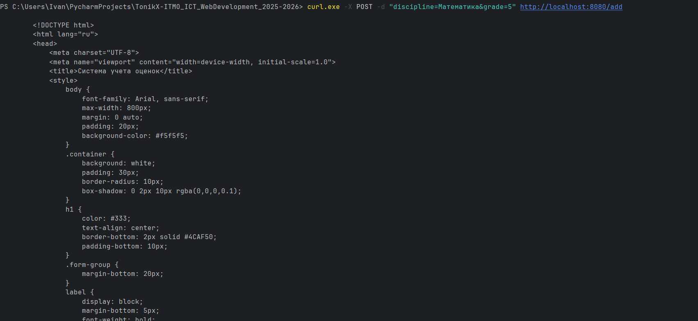
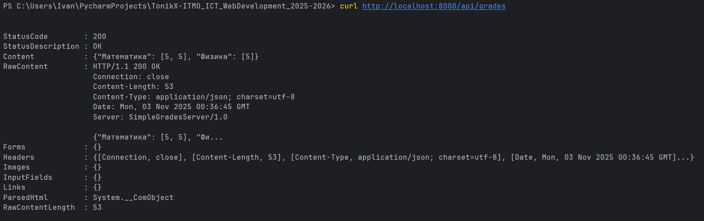
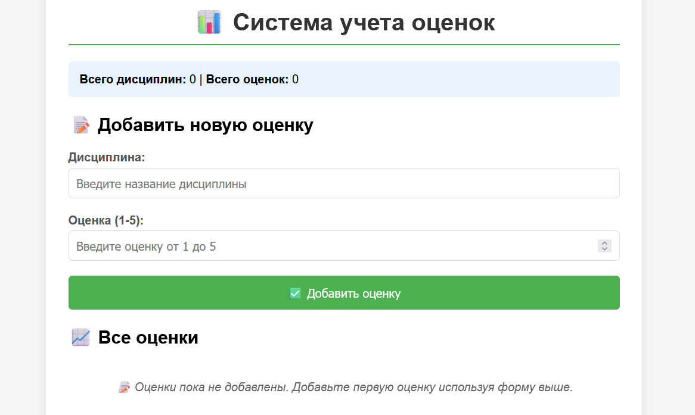

Цель¶
Написать простой веб‑сервер для обработки GET и POST HTTP‑запросов с использованием библиотеки socket.
Сервер должен уметь сохранять и отображать оценки по дисциплинам:
- через POST‑запрос добавляется дисциплина и оценка;
- через GET‑запрос отдаются все оценки в виде HTML‑страницы или JSON.
Выполнение¶
Сервер реализован на базе TCP-сокетов с использованием многопоточности для обработки одновременных HTTP-запросов. Система предоставляет веб-интерфейс и RESTful API. Функциональность сервера Обработка HTTP-запросов
Парсинг запросов: Анализ метода (GET/POST), пути и параметров запроса
Поддержка методов: GET для получения данных, POST для добавления новых оценок
Извлечение параметров: Обработка query-строки для GET и тела запроса для POST
Управление данными оценок
Хранение: Словарь для сохранения оценок по дисциплинам
Валидация: Проверка корректности вводимых оценок (целые числа от 1 до 5)
Безопасность: Экранирование HTML-символов для предотвращения XSS-атак
Маршрутизация endpoints
GET / - главная страница с интерфейсом управления
POST /add - добавление новой оценки
GET /api/grades - JSON API для получения всех оценок
Генерация контента
Динамический HTML: Автоматическое формирование страниц с актуальными данными
Статистика: Расчет среднего балла и количества оценок по каждой дисциплине
Визуализация: Табличное представление данных с CSS-стилизацией
Безопасность
Валидация входных данных на стороне сервера
Экранирование пользовательского ввода
Проверка диапазона оценок
Пользовательский интерфейс
Адаптивный дизайн с CSS-стилизацией
Интуитивная форма ввода данных
Визуальная обратная связь при операциях
Отображение статистики в реальном времени
Тестирование
Реализован тестовый клиент с использованием библиотеки requests, который проверяет:
Доступность основных endpoints
Корректность добавления оценок
Работу JSON API
Обработку ошибок
Принцип работы¶
Инициализация сервера: Создание TCP-сокета и переход в режим прослушивания
Обработка подключений: Для каждого клиента создается отдельный поток
Анализ запроса: Определение метода, пути и параметров HTTP-запроса
Маршрутизация: Выбор соответствующего обработчика на основе пути
Обработка данных: Валидация и сохранение оценок (для POST-запросов)
Генерация ответа: Формирование HTTP-ответа с соответствующими заголовками и телом
Отправка результата: Возврат HTML-страницы или JSON-данных клиенту
Протокол взаимодействия¶
Клиенты взаимодействуют с сервером через стандартные HTTP-запросы
Для веб-интерфейса используется браузер
Для автоматизированного тестирования применяется REST-клиент
Данные передаются в формате application/x-www-form-urlencoded для форм и JSON для API
Сервер¶
import socket
import threading
from urllib.parse import parse_qs
import html
from datetime import datetime
class SimpleHTTPServer:
def __init__(self, host='localhost', port=8080):
self.host = host
self.port = port
self.grades = {} # {discipline: [grade1, grade2, ...]}
self.server_socket = None
def parse_request(self, request_data):
"""Парсит HTTP запрос"""
lines = request_data.split('\r\n')
if not lines:
return None, None, {}
# Первая строка - метод и путь
first_line = lines[0].split()
if len(first_line) < 2:
return None, None, {}
method = first_line[0]
path = first_line[1]
# Парсим параметры
params = {}
if method == 'GET' and '?' in path:
path, query_string = path.split('?', 1)
params = parse_qs(query_string)
# Убираем списки из значений
params = {k: v[0] for k, v in params.items()}
elif method == 'POST':
# Ищем тело запроса
body_start = request_data.find('\r\n\r\n') + 4
if body_start > 3:
body = request_data[body_start:]
params = parse_qs(body)
params = {k: v[0] for k, v in params.items()}
return method, path, params
def add_grade(self, discipline, grade):
"""Добавляет оценку по дисциплине"""
discipline = html.escape(discipline.strip())
try:
grade = int(grade)
if grade < 1 or grade > 5:
return False, "Оценка должна быть от 1 до 5"
except ValueError:
return False, "Оценка должна быть числом"
if discipline not in self.grades:
self.grades[discipline] = []
self.grades[discipline].append(grade)
return True, "Оценка успешно добавлена"
def generate_html(self, message=""):
"""Генерирует HTML страницу с оценками"""
html_content = f"""
<!DOCTYPE html>
<html lang="ru">
<head>
<meta charset="UTF-8">
<meta name="viewport" content="width=device-width, initial-scale=1.0">
<title>Система учета оценок</title>
<style>
body {{
font-family: Arial, sans-serif;
max-width: 800px;
margin: 0 auto;
padding: 20px;
background-color: #f5f5f5;
}}
.container {{
background: white;
padding: 30px;
border-radius: 10px;
box-shadow: 0 2px 10px rgba(0,0,0,0.1);
}}
h1 {{
color: #333;
text-align: center;
border-bottom: 2px solid #4CAF50;
padding-bottom: 10px;
}}
.form-group {{
margin-bottom: 20px;
}}
label {{
display: block;
margin-bottom: 5px;
font-weight: bold;
color: #555;
}}
input[type="text"], input[type="number"] {{
width: 100%;
padding: 10px;
border: 1px solid #ddd;
border-radius: 5px;
font-size: 16px;
box-sizing: border-box;
}}
button {{
background: #4CAF50;
color: white;
padding: 12px 24px;
border: none;
border-radius: 5px;
cursor: pointer;
font-size: 16px;
width: 100%;
}}
button:hover {{
background: #45a049;
}}
.message {{
padding: 10px;
margin: 10px 0;
border-radius: 5px;
text-align: center;
}}
.success {{
background: #d4edda;
color: #155724;
border: 1px solid #c3e6cb;
}}
.error {{
background: #f8d7da;
color: #721c24;
border: 1px solid #f5c6cb;
}}
.grades-table {{
width: 100%;
border-collapse: collapse;
margin-top: 20px;
}}
.grades-table th, .grades-table td {{
border: 1px solid #ddd;
padding: 12px;
text-align: left;
}}
.grades-table th {{
background: #f8f9fa;
font-weight: bold;
}}
.grades-table tr:nth-child(even) {{
background: #f2f2f2;
}}
.no-data {{
text-align: center;
color: #666;
font-style: italic;
padding: 20px;
}}
.stats {{
background: #e7f3ff;
padding: 15px;
border-radius: 5px;
margin: 15px 0;
}}
</style>
</head>
<body>
<div class="container">
<h1>📊 Система учета оценок</h1>
<div class="stats">
<strong>Всего дисциплин:</strong> {len(self.grades)} |
<strong>Всего оценок:</strong> {sum(len(grades) for grades in self.grades.values())}
</div>
<h2>📝 Добавить новую оценку</h2>
<form method="POST" action="/add">
<div class="form-group">
<label for="discipline">Дисциплина:</label>
<input type="text" id="discipline" name="discipline" required
placeholder="Введите название дисциплины">
</div>
<div class="form-group">
<label for="grade">Оценка (1-5):</label>
<input type="number" id="grade" name="grade" min="1" max="5" required
placeholder="Введите оценку от 1 до 5">
</div>
<button type="submit">✅ Добавить оценку</button>
</form>
"""
# Добавляем сообщение, если есть
if message:
msg_class = "success" if "успешно" in message else "error"
html_content += f'<div class="message {msg_class}">{message}</div>'
# Добавляем таблицу с оценками
html_content += """
<h2>📈 Все оценки</h2>
"""
if self.grades:
html_content += """
<table class="grades-table">
<thead>
<tr>
<th>Дисциплина</th>
<th>Оценки</th>
<th>Средний балл</th>
<th>Количество</th>
</tr>
</thead>
<tbody>
"""
for discipline, grades in sorted(self.grades.items()):
avg_grade = sum(grades) / len(grades)
grades_str = ", ".join(map(str, grades))
html_content += f"""
<tr>
<td><strong>{discipline}</strong></td>
<td>{grades_str}</td>
<td>{avg_grade:.2f}</td>
<td>{len(grades)}</td>
</tr>
"""
html_content += """
</tbody>
</table>
"""
else:
html_content += """
<div class="no-data">
📝 Оценки пока не добавлены. Добавьте первую оценку используя форму выше.
</div>
"""
# Футер
html_content += f"""
<div style="margin-top: 30px; text-align: center; color: #666; font-size: 12px;">
Сервер запущен: {datetime.now().strftime('%Y-%m-%d %H:%M:%S')}
</div>
</div>
</body>
</html>
"""
return html_content
def create_response(self, status_code, content, content_type="text/html; charset=utf-8"):
"""Создает HTTP ответ"""
status_messages = {
200: "OK",
201: "Created",
400: "Bad Request",
404: "Not Found",
405: "Method Not Allowed"
}
response = [
f"HTTP/1.1 {status_code} {status_messages.get(status_code, 'Unknown')}",
f"Content-Type: {content_type}",
f"Content-Length: {len(content.encode('utf-8'))}",
"Connection: close",
f"Date: {datetime.now().strftime('%a, %d %b %Y %H:%M:%S GMT')}",
"Server: SimpleGradesServer/1.0",
"", # Пустая строка разделяет заголовки и тело
content
]
return "\r\n".join(response)
def handle_request(self, client_socket, client_address):
"""Обрабатывает HTTP запрос"""
try:
# Получаем данные запроса
request_data = client_socket.recv(4096).decode('utf-8')
if not request_data:
return
print(f"Запрос от {client_address}:")
print(request_data.split('\r\n')[0]) # Первая строка запроса
print()
# Парсим запрос
method, path, params = self.parse_request(request_data)
# Обрабатываем маршруты
if path == '/' or path == '/grades':
# Главная страница с оценками
html_content = self.generate_html()
response = self.create_response(200, html_content)
elif path == '/add' and method == 'POST':
# Добавление новой оценки
discipline = params.get('discipline', '')
grade = params.get('grade', '')
if discipline and grade:
success, message = self.add_grade(discipline, grade)
html_content = self.generate_html(message)
response = self.create_response(201, html_content)
else:
html_content = self.generate_html("Ошибка: заполните все поля")
response = self.create_response(400, html_content)
elif path == '/add' and method == 'GET':
# Показываем форму добавления
html_content = self.generate_html()
response = self.create_response(200, html_content)
elif path == '/api/grades':
# JSON API для получения оценок
import json
json_data = json.dumps(self.grades, ensure_ascii=False)
response = self.create_response(200, json_data, "application/json; charset=utf-8")
else:
# Страница не найдена
error_html = """
<!DOCTYPE html>
<html>
<head><title>404 Not Found</title></head>
<body>
<h1>404 - Страница не найдена</h1>
<p>Запрошенная страница не существует</p>
<p><a href="/">Вернуться на главную</a></p>
</body>
</html>
"""
response = self.create_response(404, error_html)
# Отправляем ответ
client_socket.send(response.encode('utf-8'))
print(f"Ответ отправлен: {response.split('\r\n')[0]}")
except Exception as e:
print(f"Ошибка обработки запроса от {client_address}: {e}")
error_response = self.create_response(500, "Internal Server Error")
client_socket.send(error_response.encode('utf-8'))
finally:
client_socket.close()
def start(self):
"""Запускает сервер"""
self.server_socket = socket.socket(socket.AF_INET, socket.SOCK_STREAM)
self.server_socket.setsockopt(socket.SOL_SOCKET, socket.SO_REUSEADDR, 1)
try:
self.server_socket.bind((self.host, self.port))
self.server_socket.listen(5)
print("=" * 60)
print("🎓 СЕРВЕР УЧЕТА ОЦЕНОК ЗАПУЩЕН")
print("=" * 60)
print(f"Сервер доступен по адресу: http://{self.host}:{self.port}")
print("Доступные endpoints:")
print(" GET / - Главная страница с оценками")
print(" POST /add - Добавить новую оценку")
print(" GET /api/grades - JSON API со всеми оценками")
print("\nДля остановки сервера нажмите Ctrl+C")
print("=" * 60)
while True:
try:
client_socket, client_address = self.server_socket.accept()
# Запускаем поток для обработки клиента
client_thread = threading.Thread(
target=self.handle_request,
args=(client_socket, client_address),
daemon=True
)
client_thread.start()
print(f"Новое подключение: {client_address}")
except KeyboardInterrupt:
break
except Exception as e:
print(f"Ошибка при принятии подключения: {e}")
except KeyboardInterrupt:
print("\nОстановка сервера...")
except Exception as e:
print(f"Ошибка сервера: {e}")
finally:
if self.server_socket:
self.server_socket.close()
print("Сервер остановлен")
if __name__ == "__main__":
server = SimpleHTTPServer()
server.start()
Test Файл для POST запросов¶
import requests
import json
def test_server():
base_url = "http://localhost:8080"
print("Тестирование сервера оценок...")
try:
# Тест главной страницы
response = requests.get(f"{base_url}/")
print(f"GET / - Status: {response.status_code}")
# Тест добавления оценок
test_grades = [
{"discipline": "Математика", "grade": "5"},
{"discipline": "Физика", "grade": "4"},
{"discipline": "Программирование", "grade": "5"},
{"discipline": "Математика", "grade": "4"},
]
for grade in test_grades:
response = requests.post(f"{base_url}/add", data=grade)
print(f"POST /add {grade} - Status: {response.status_code}")
# Тест JSON API
response = requests.get(f"{base_url}/api/grades")
print(f"GET /api/grades - Status: {response.status_code}")
grades_data = response.json()
print("Данные оценок:", json.dumps(grades_data, ensure_ascii=False, indent=2))
except requests.ConnectionError:
print("Ошибка: не удалось подключиться к серверу. Убедитесь, что сервер запущен.")
except Exception as e:
print(f"Ошибка тестирования: {e}")
if __name__ == "__main__":
test_server()
Результат¶
Можно самостоятельно поработать с cURL в нашем случае это WPS так что некоторые запросы cURL будут алиасами(псевдонимами)

Перед проверкой обработки GET-запросов был запущен тестовый клиент, который выполнил серию POST-запросов для добавления оценок в систему. Это позволило проверить работу сервера как с пустой базой данных, так и с заполненными данными.
При заходе в браузер по адресу сервера (http://localhost:8080/) пользователь видит HTML‑страницу с текущими оценками:

Вывод¶
Реализован простой веб‑сервер на Python, который самостоятельно парсит запрос и в зависимости от его типа отдает нужные ответы с необходимыми заголовками.